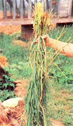
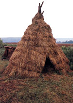
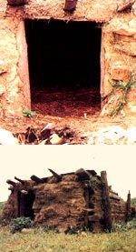
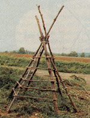
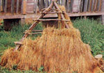
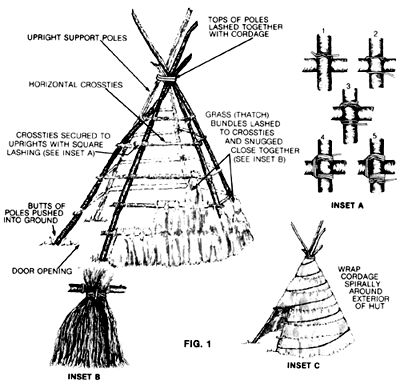
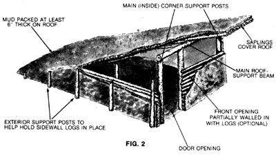

At Home In The Wilderness
How to construct two different long-term survival shelters, including the thatched hut and the mud hut, plan before you build, thatching, diagrams.
By Tom Brown Jr.
September/October 1985
Back in MOTHER NO. 71, wilderness survival expert Tom Brown 7r. (known worldwide as The Tracker) showed us how to construct the leaf hut-an expedient and reliable short-term survival shelter. In this article, the ninth installment of The Tracker's ongoing wilderness survival series, Tom discusses the basics of building two different long-term survival shelters.
Part IX: Advanced Survival Shelters
With many hunting seasons opening in the coming months, a lot of individuals-some of whom have had very little wilderness experience-will be taking to the woods. Unfortunately, a few of them will also become lost or be stranded by inclement weather. Should you be faced with such a wilderness survival situation, your first course of action should be the construction of a temporary shelter-such as a leaf or debris hut-that will keep you warm and dry and that can be erected quickly, with a minimum expenditure of energy and natural materials. Only after that basic shelter is up-and your other pressing survival needs (water, fire, and food) have been taken care of-should you consider building a larger, more permanent and comfortable wilderness home.
Of course, if luck is with you, you'll never need to erect and occupy either of the two long-term survival shelters I'm going to talk about in the following paragraphs. But if you ever should find yourself stranded in the wilds for an extended period, knowing how to construct a shelter that will not only keep you warm and dry but also provide ample living and work space could brighten your outlook considerably-and by doing so, increase the likelihood of your surviving until you're rescued.
Neither of these advanced shelters requires any construction tools other than those you can fashion yourself, and no materials other than those provided by nature. Also, once erected, either style of shelter should be habitable for several years if kept up. In fact, if you have access to a privately owned woods (your own or a friend's), you might want to build a "practice" survival hut. It could serve as a storage building or even a primitive hunting camp or blind; it'll cost nothing to erect, will blend in with its natural surroundings, will be relatively easy to construct, and-most important-will provide invaluable hands-on experience that will stand you well should you ever wind up in a true long-term survival fix.
PLAN BEFORE YOU BUILD
No matter what type of shelter you're building, long-term or temporary, locate it on a well-drained, elevated site that's at least 50 yards from any body of water that could rise and flood you out. And while it's beneficial to have your shelter shielded from the elements by such natural windbreaks as large trees and rocks, don't place your survival home so deep in the forest that sunlight can't get through to warm and brighten it. Finally, consider the availability of construction materials and other survival necessities (such as water) before deciding on a building site; hauling materials in from long distances is a waste of time and-more important-precious energy.
THE THATCHED HUT
Thatched huts are commonly used as year-round dwellings in tropical and semitropical climes, and can offer satisfactory shelter for spring, summer, and fall living in temperate zones. If properly constructed, these seemingly fragile structures can withstand high winds and prolonged downpours and will provide excellent protection against the heat of the baking sun.
The only possible skill-related obstacle to building this shelter-unless you always carry some type of rope with you-is that the hut's construction requires several yards of cordage (that is, any rope, cord, or twine fashioned by hand from natural materials) or long strips of inner bark from certain types of trees. (See my article "Making Natural Cordage" in MOTHER N0. 79 to learn this important survival skill.) Once the cordage is at hand, however, a thatched but goes up in as little as a day and can last several years if properly maintained.
I prefer a tipi-shaped but that's tall enough to accommodate an elevated sleeping loft; it leaves plenty of room on the ground floor for storage, working, and moving around. For two adults, the optimum size for a tipi-shaped thatched but is nine feet across the base and ten feet high. While long-stemmed grasses make the best thatching material, reeds are also excellent-and cattails, ferns, and evergreen boughs will suffice if nothing better is available.
To construct a thatched hut, locate several long, stout saplings that can be placed upright in a typical tipi shape. These upright saplings should be strong enough to hold your weight (you'll have to climb on them during construction) when their butts are spaced evenly around the diameter of the hut's base. (I recommend sinking the butts a few inches into the ground to increase the structure's stability.) Before standing the poles up, lash their tips together by wrapping them with cordage where they will cross at the apex of the tipi (Fig. 1).
The next step is to weave parallel hoops of long, flexible saplings horizontally between the upright tipi poles to form a latticework, securing these crossties to the uprights with square-lashed cordage (Fig. 1, Inset A).
The first (lowest) round of horizontal crossties should be located no more than a few inches above the ground, with subsequent rounds spaced at even intervals up the tipi poles. To insure that the overlapping rows of thatch will provide a proper shingling effect, the vertical spacing of the crossties should be no more than half to two-thirds the length of your thatching material. (For example, if you'll be thatching with bundles of grass that average 18" long, the horizontal cross-ties should be positioned at 9" to 12" intervals up to within a few inches of the top of the hut.)
To provide for a door, omit enough rows of crossties between two of the uprights on the east-facing side of the hut-beginning with the bottom round-to form an entrance hole just large enough to crouch through.
The final frame members to be put in place are several sturdy poles (rigid, large-diameter saplings do nicely) that will act as floor joists to support the sleeping loft. Since they'll have to support your weight, the loft joists should be securely lashed directly to the uprights rather than laid atop a round of crossties. For loft flooring, you can use overlapping sections of heavy bark, or make a mat of smalldiameter poles laid side by side and perpendicular to the joists and lashed in place with cordage.
THATCHING
To make a thatch "shingle," gather up enough long-stemmed grass to make a bundle that's a little too fat to hold in one hand. Now turn the bundle so that the root ends of the grass are facing up, and "belt" it with cordage about a quarter of the way down from the top. Wrap the cordage tightly enough to form a waist in the bundle, and tie it securely-but leave enough line dangling from either side of the knot to secure the bundle to the framework of the but (Fig. 1, Inset B).
Once you have a quantity of thatch bundles made up, tie the first one-root end up-to the bottom crosstie and snug it alongside the nearest upright. Attach the second bundle hard against the first, and continue in this manner until you've thatched the lower crosstie all the way around the but (except for the door opening). Now begin thatching the next cross-tie up . . . then the next (using the framework as scaffolding), until you reach the top of the tipi. The critical point to remember is that the bottoms of the thatch bundles in each higher row should overlap the tops of the bundles in the row just below it-exactly like shingles on a roof.
The uppermost round of thatching will form a bushy cap at the top of the tipi. To make this cap watertight, tie the tops of the uppermost layer of bundles together with cordage. To further waterproof the crown, you can lash several more bundles of thatch over the top at different angles.
Now, with your outstretched fingers, go over the thatching inch by inch, working the bundles of grass until they intertwine and lay flat to provide a wind- and watertight surface.
The entrance hole can be draped with animal hides, or a door fashioned by lashing bundles of thatching to a stick framework.
The final step is to reinforce the entire shelter by spiraling cordage down from the top to hold the grass bundles flat against the framework and to prevent them from flapping and separating in high winds (Fig. 1, Inset C).
THE MUD HUT
The mud but is one of the finest survival shelters I know of-because it's suitable for year-round habitation in any climate. Wind doesn't make it shake, it's strong enough to stand up under heavy snow loads, it tends to be warm in winter and cool in summer, and it's easy to maintain.
What's more, because a fireplace can be safely built inside this shelter, it's especially well suited to riding out severe winters in relative comfort. You can design and build a mud but in just about any shape you can dream up, and make it as large or as small as you want, but my favorite is what I call the mountain man style: a lean-to with sides, a door on the high end, and a roof that slopes back and down to touch the ground at the rear of the shelter (Fig. 2).
The load-bearing members of the but are rocks and logs, but the material that holds it all together is mud. Not just any old mud, though; you want the thickest, gooiest muck you can find. You can make your own by mixing clay-bearing soil and water, but it's better, if possible, to locate your shelter near a natural deposit of muck (common along the shores of lakes and slow-running streams and in swampy areas).
In addition to logs, rocks, and mud, you'll need a good supply of dried grass to mix with the mud as a binder.
Begin construction by cutting several very sturdy poles to serve as the uprights that will support the roof and act as a framework for the sidewalls. Doing the best you can with the tools you have available, sharpen the thinner ends of the uprights and cut V notches in the butt ends. (If you can locate enough of them, forked poles-with the tines facing up-make the best upright supports.)
Now drive the sharpened ends of the uprights a foot or so into the ground; the two thickest and tallest poles should form the front corners of the lean-to, with additional uprights spaced down the sides of the structure. (The exact number of vertical supports you'll need will be determined by the size of the hut.)
A single horizontal log beam spans and rests atop the two tallest (front) uprights. Since this beam will have to support the considerable weight of the front of the roof, it should be hefty and should be lashed firmly in place to the notched (or forked) tops of the uprights.
To fabricate the roof, lay small logs or stout saplings side by side and parallel to the hut's sidewalls-their tips jammed into the ground at the back (lower) end of the lean-to, and their butts overhanging the front roof beam by at least several inches (the more the better, as this overhang will help shield the door opening from sun, rain, and snow). If you have plenty of cordage available, lash the roof poles together, as well as to the uprights at either side and to the crossbeam in front.
The sides of the mountain man but can be built up (that is, filled in) with either rocks or logs-and here's where the going gets muddy. Start by preparing a muck pit: I find that two parts thick mud to one part dried grass provides a good general-purpose mortar. When the mud is ready, mound up a row of it on the ground where the first sidewall is to go, then press the first log (or the first row of large rocks) firmly into the mortar. Now spread another layer of mortar along the top of the log (or rocks) you just put in place, and lay on the second log (or the second layer of rocks) . . . and so on until both sides of the but are enclosed all the way to the roof. Because of the triangular shape of the sides, the logs (or rows of rock) will get shorter as the walls rise.
If you're siding with rock, the walls will be stronger if they're made thickest at their bases, narrowing as they rise. If you're siding with logs, stack them up and mortar them in place snugly against the outsides of the upright support poles-then pound a second row of uprights into the ground just outside the horizontal logs so that each wall is sandwiched between two rows of uprights.
Finally, coat the exterior and interior walls with a heavy layer of mud to seal any cracks . . . and pack it at least six inches thick on top of the roof to provide weatherproofing and insulation. (If you build your but in the spring or early summer and cover its mud top with a few inches of loose soil, the roof will probably grow a matting of grass and weeds, increasing its durability significantly.)
A mud shelter will require several days to dry thoroughly, depending on the weather. Surprisingly, though, rain doesn't seem to slow the drying process to any extent or to wash away much of the mud.
HUT HEAT
A covering for the open front of the mountain man but can be fashioned by suspending animal hides from the top of the opening-or you can enclose most of the front with mud and logs or rock, then make a sturdy door for the remaining opening by lashing together several large saplings or small logs cut to length. (If you have no tools, you can "cut" logs by burning them in a campfire at the desired point of separation, then hacking at the charred wood with a large, sharp-edged rock.)
To take care of your heating and cooking needs, you can use rocks and mortar to construct a fireplace and chimney-which can be built on either the outside or the inside of the structure. An external fireplace necessitates cutting a hole through one wall at floor level, while an internal fireplace takes up living space and requires cutting a hole in the roof for the chimney.
AT HOME IN THE WILDERNESS
The thatched tipi but and the mountain man mud but are but two examples of the many ways you can make yourself more at home in the wilderness. In practice, there's no limit to how well you can care for yourself in a survival situation-if you'll only accept the responsibility of gaining the necessary knowledge and skills now, before you need them.
EDITOR'S NOTE: The Tracker's latest book, Tom Brown's Field Guide to Living with the Earth, includes sections on building additional advanced survival shelters, as well as tips for furnishing and living in them in style. The 252 page paperback is available from book sellers for $7.95, or you can order it from The Tracker at P.O. Box 173, Asbury, NJ 08802-0173, for the cover price plus $1.50 handling charge. For information on ordering back issues mentioned in this article, turn to page 128.
|
 A thatch ""shingle"" made from a bundle of long- stemmed grass wrapped together at the root ends with cordage . |
 A tipi-shaped thatched hut such as this can be built in a day and can accommodate an elevated sleeping loft and provide two adults with spacious three- season shelter. |
 The author calls mud huts like these ""the finest survival shelters I know of"". His favorite style is a lean-to with a roof that slopes down to the ground at the rear. |
|
 The basic framework for a thatched hut. |
 Thatched bundles are installed from the bottom up in overlapping rows, much like roofing shingles. |
 When constructed properly, a mud hut can be a reliable year- round dwelling in any climate. Cool in summer and warm in winter, the structure will withstand rain, wind, and heavy snow. This ""earth shelter"" hut provides survival living at its finest. |
|
 |
 |
|